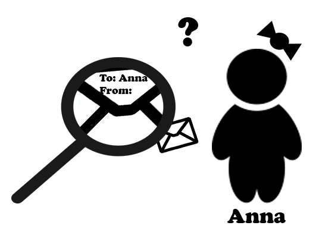

Digital Signature
A bit of recall...
I the previous sites we were discussing about the methods of encrypting messages. Encryption as a process guarantees confidentiality of the message.
So let's move back to our old friends and imagine the following situation: Anna receives the encrypted message from Mary, she uses her private decrypting key so she is able to get the plain text of the message. But how can she be sure that noone has impersonated of Mary? Unfortunately ciphers do not ensure authenticity of the message.
To provide authenticity of paper document we use signatures, so there should be something similar to the idea of hand signatures but adapted to the digital documents. And here finally comes the digital signature.
Digital signature - a closer look
Digital signature is a mathematical function of technique which is used to provide authenticity and integrity of a electronic document or message. This is the digital correspondet to the handwritten signature or a stamp. Thanks to the digital signature we know that message comes from proper sender and we have got also assurance that the message was not changed during the transmission.
So lets sum up what the siganture gives to the users:
- Authenticity - receiver is sure about the author of the document. Signature leads flawless to the sender.
- Non-repudiation - it means that the author of the document signed by him cannot deny having signed it. Signature is an evidence that author knows the document.
- Integrity - valid signature tells the receiver that the message was not changed during the transmission. Because of the fact that signature uses text of the message itself, changing the text will affect validation of the signature.
This looks great however not all countries are respecting both: handwritten signatures and digital signatures equally nowadays